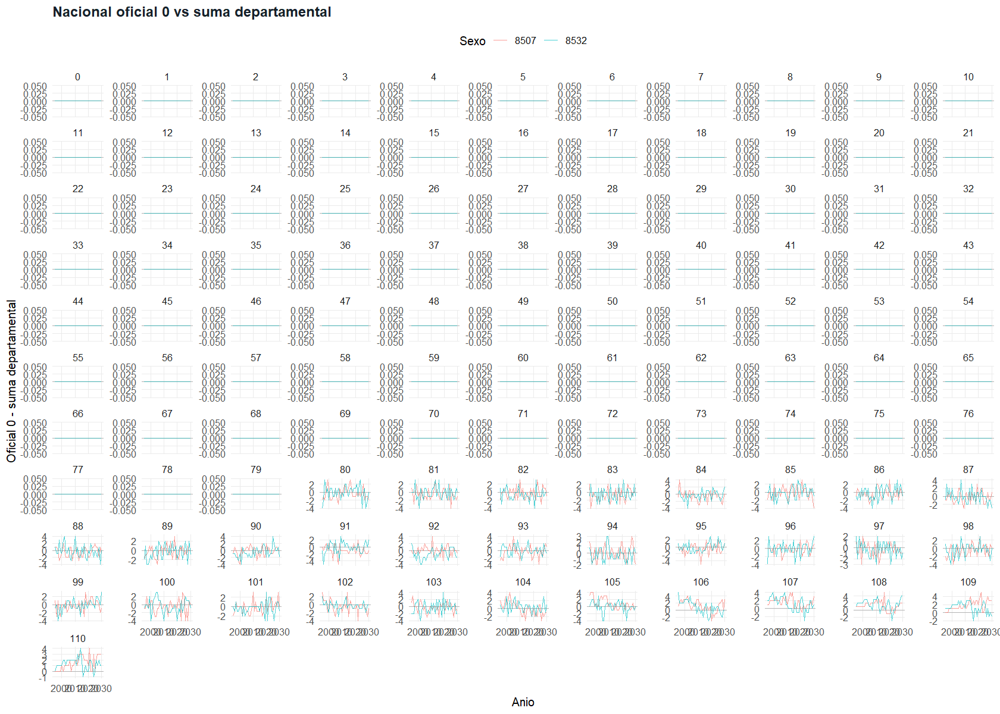

Resumen
Que mirar primero
Use esta pagina como tablero ejecutivo. Para revisar detalle, abra los tomos: contrato, observado-final, extrapolacion, nacionalidad y glosario.
Contrato estructural: OKJerarquico 9000: OKDiccionarios: OKComparacion estructural baseline/post: NO DISPONIBLEHash de contenido baseline/post: NO DISPONIBLE
Prioridades
Hallazgos y rutas de revision
Empiece aqui si solo quiere saber si hay algo que mirar con mas detalle.
Duplicados PK: 0Flags cola interna 80-125: 0Dif. masa 80 y +: 0Dif. tope nacional 125: 0Dif. exactitud 110+: 0Incoherencias xrepo 110+: 0Pisos 110+ aplicados: 0Masa agregada xrepo: 0Diferencias nacional oficial vs suma dept.: 676Diferencias 9000 vs suma dept.: 0Filas cola interna con flag: 2833
Contrato
Indicadores principales
| indicador | valor |
|---|---|
| Filas contrato | 207792 |
| Filas jerarquico | 207792 |
| PK duplicadas contrato | 0 |
| Faltantes requeridos | 0 |
| Ubicaciones coherencia | 26 |
| Curvas edad-region-anio | 936 |
Compatibilidad downstream
Fingerprint baseline vs post
Como leer esta tabla. Se muestran los campos que sirven para juzgar compatibilidad estructural y de contenido. generated_at cambia por ejecucion y se reporta aparte.
Diccionario de columnas
| column_name | label | description | data_type | example_values |
|---|---|---|---|---|
| input_path | input_path | input_path | character | C:/Users/Usuario/OneDrive/Consultorias_Personales/Carga-CDC-Peru-2023/carga-enfermedad-peru-2018-2024/demografia-poblacion-inei/data/final/population_inei/population_result.parquet |
| generated_at | generated_at | generated_at | datetime | 2026-04-16 02:00:26 |
| n_rows | n_rows | n_rows | integer | 207792 |
| n_cols | n_cols | n_cols | integer | 5 |
| columns | columns | columns | character | year_id|age|sex_id|location_id|population |
| schema | schema | schema | character | year_id:integer;age:integer;sex_id:integer;location_id:integer;population:integer |
| missing_required_cols | missing_required_cols | missing_required_cols | logical | |
| pk_unique_n | pk_unique_n | pk_unique_n | integer | 207792 |
| pk_duplicate_n | pk_duplicate_n | pk_duplicate_n | integer | 0 |
| required_missing_n | required_missing_n | required_missing_n | integer | 0 |
| year_range | year_range | year_range | character | 1995|2030 |
| age_range | age_range | age_range | character | 0|110 |
| sex_domain | sex_domain | sex_domain | character | 8507|8532 |
| location_domain | location_domain | location_domain | character | 0|1|2|3|4|5|6|7|8|9|10|11|12|13|14|15|16|17|18|19|20|21|22|23|24|25 |
| population_range | population_range | population_range | character | 0|319672 |
| file_md5 | file_md5 | file_md5 | character | a16f97f3e1bb2dc1f7a2a8a588369fbd |
| content_sha256 | content_sha256 | content_sha256 | character | 761ab7d014948bb144d1ea7c3ba725bfb9514e94c2142cb2e9f676a0a4bf8184 |
Sin filas para mostrar.
Tablas QC
QC contractual
Resumen final
| dataset_id | table_name | version | run_id | n_rows | n_cols | year_min | year_max | age_min | age_max | n_pk_dups | n_negative_pop | n_tail_increase_flags | qc_tail_mass_n_diff | qc_tail_cap_125_n_diff | qc_tail_external_alignment_n_diff | qc_tail_share_110plus_n_far | qc_tail_benchmark_source_n_strata | qc_tail_open_interval_exclusion_n_diff | qc_crossrepo_110plus_n_incoherent | qc_crossrepo_110plus_n_floor_applied | qc_crossrepo_110plus_mass_added | qc_nat_vs_dep_n_missing | qc_nat_vs_dep_n_diff | qc_110plus_collapse_n_diff |
|---|---|---|---|---|---|---|---|---|---|---|---|---|---|---|---|---|---|---|---|---|---|---|---|---|
| inei_population_1995_2030 | population_result | v1.0.0 | 20260416_020008 | 207792 | 5 | 1995 | 2030 | 0 | 110 | 0 | 0 | 0 | 0 | 0 | 0 | 0 | 1872 | 0 | 0 | 0 | 0 | 0 | 676 | 0 |
QC jerarquico
| dataset | n_rows | n_cols | n_missing_required_cols | n_pk_dups | n_negative_pop | has_location_9000 | has_location_0 | run_ts |
|---|---|---|---|---|---|---|---|---|
| population_result_hierarchical | 207792 | 5 | 0 | 0 | 0 | TRUE | FALSE | 2026-04-16 02:00:17 |
Nacional
Comparaciones detectivas
qc_nacional_0_vs_departamentos

Vista previa nacional oficial vs suma departamental
Solo filas con diferencia detectiva.
Vista previa: primeras 30 de 676 filas.
| year_id | sex_id | age | pop_national | pop_dept_sum | diff_abs | diff_pct | flag_diff | flag_missing |
|---|---|---|---|---|---|---|---|---|
| 1995 | 8507 | 93 | 794 | 797 | -3 | -0.376411543287327 | TRUE | FALSE |
| 1995 | 8507 | 94 | 581 | 579 | 2 | 0.345423143350605 | TRUE | FALSE |
| 1995 | 8507 | 97 | 209 | 208 | 1 | 0.480769230769231 | TRUE | FALSE |
| 1995 | 8507 | 98 | 144 | 146 | -2 | -1.36986301369863 | TRUE | FALSE |
| 1995 | 8507 | 99 | 96 | 95 | 1 | 1.05263157894737 | TRUE | FALSE |
| 1995 | 8507 | 100 | 63 | 64 | -1 | -1.5625 | TRUE | FALSE |
| 1995 | 8507 | 101 | 39 | 41 | -2 | -4.87804878048781 | TRUE | FALSE |
| 1995 | 8507 | 102 | 24 | 21 | 3 | 14.2857142857143 | TRUE | FALSE |
| 1995 | 8507 | 103 | 14 | 13 | 1 | 7.69230769230769 | TRUE | FALSE |
| 1995 | 8507 | 104 | 8 | 6 | 2 | 33.3333333333333 | TRUE | FALSE |
| 1995 | 8507 | 105 | 5 | 2 | 3 | 150 | TRUE | FALSE |
| 1995 | 8507 | 106 | 2 | 1 | 1 | 100 | TRUE | FALSE |
| 1995 | 8532 | 92 | 1887 | 1885 | 2 | 0.106100795755968 | TRUE | FALSE |
| 1995 | 8532 | 93 | 1456 | 1458 | -2 | -0.137174211248285 | TRUE | FALSE |
| 1995 | 8532 | 95 | 802 | 801 | 1 | 0.124843945068664 | TRUE | FALSE |
| 1995 | 8532 | 96 | 590 | 594 | -4 | -0.673400673400673 | TRUE | FALSE |
| 1995 | 8532 | 97 | 424 | 422 | 2 | 0.4739336492891 | TRUE | FALSE |
| 1995 | 8532 | 98 | 298 | 297 | 1 | 0.336700336700337 | TRUE | FALSE |
| 1995 | 8532 | 99 | 203 | 204 | -1 | -0.490196078431373 | TRUE | FALSE |
| 1995 | 8532 | 100 | 135 | 136 | -1 | -0.735294117647059 | TRUE | FALSE |
| 1995 | 8532 | 102 | 54 | 52 | 2 | 3.84615384615385 | TRUE | FALSE |
| 1995 | 8532 | 103 | 32 | 34 | -2 | -5.88235294117647 | TRUE | FALSE |
| 1995 | 8532 | 104 | 19 | 18 | 1 | 5.55555555555556 | TRUE | FALSE |
| 1995 | 8532 | 106 | 6 | 1 | 5 | 500 | TRUE | FALSE |
| 1995 | 8532 | 107 | 3 | 1 | 2 | 200 | TRUE | FALSE |
| 1996 | 8507 | 93 | 850 | 852 | -2 | -0.234741784037559 | TRUE | FALSE |
| 1996 | 8507 | 94 | 623 | 622 | 1 | 0.160771704180064 | TRUE | FALSE |
| 1996 | 8507 | 95 | 446 | 447 | -1 | -0.223713646532438 | TRUE | FALSE |
| 1996 | 8507 | 97 | 226 | 227 | -1 | -0.440528634361233 | TRUE | FALSE |
| 1996 | 8507 | 98 | 155 | 158 | -3 | -1.89873417721519 | TRUE | FALSE |
Vista previa aditividad 9000
La expectativa es cero diferencias.
Sin filas para mostrar.
Diccionarios
Cobertura de diccionarios
| table_path | dictionary_path | table_exists | dictionary_exists | table_n_cols | dictionary_n_rows | missing_in_dictionary | extra_in_dictionary | status |
|---|---|---|---|---|---|---|---|---|
| data/derived/staging/inei_population/download_log.csv | data/derived/staging/inei_population/download_log_diccionario_ext.csv | TRUE | TRUE | 6 | 6 | NA | NA | OK |
| data/derived/staging/inei_population/parse_log.csv | data/derived/staging/inei_population/parse_log_diccionario_ext.csv | TRUE | TRUE | 6 | 6 | NA | NA | OK |
| data/derived/staging/inei_population/raw_long.parquet | data/derived/staging/inei_population/raw_long_diccionario_ext.csv | TRUE | TRUE | 12 | 12 | NA | NA | OK |
| data/derived/staging/inei_population/omop_like_long.parquet | data/derived/staging/inei_population/omop_like_long_diccionario_ext.csv | TRUE | TRUE | 19 | 19 | NA | NA | OK |
| data/derived/staging/inei_population/population_modeled_internal_0_125.parquet | data/derived/staging/inei_population/population_modeled_internal_0_125_diccionario_ext.csv | TRUE | TRUE | 5 | 5 | NA | NA | OK |
| data/derived/staging/inei_population/population_crossrepo_110plus_adjustment.parquet | data/derived/staging/inei_population/population_crossrepo_110plus_adjustment_diccionario_ext.csv | TRUE | TRUE | 14 | 14 | NA | NA | OK |
| data/derived/staging/inei_population/population_tail_external_benchmark_peru_80_125.parquet | data/derived/staging/inei_population/population_tail_external_benchmark_peru_80_125_diccionario_ext.csv | TRUE | TRUE | 15 | 15 | NA | NA | OK |
| data/derived/staging/inei_population/population_tail_contract_bridge_80_109_110plus.parquet | data/derived/staging/inei_population/population_tail_contract_bridge_80_109_110plus_diccionario_ext.csv | TRUE | TRUE | 5 | 5 | NA | NA | OK |
| data/derived/staging/inei_population/population_national_from_dept.parquet | data/derived/staging/inei_population/population_national_from_dept_diccionario_ext.csv | TRUE | TRUE | 5 | 5 | NA | NA | OK |
| data/final/population_inei/population_result.parquet | data/final/population_inei/population_result_diccionario_ext.csv | TRUE | TRUE | 5 | 5 | NA | NA | OK |
| data/final/population_inei/population_result_hierarchical.parquet | data/final/population_inei/population_result_hierarchical_diccionario_ext.csv | TRUE | TRUE | 5 | 5 | NA | NA | OK |
| data/derived/qc/inei_population/qc_summary.csv | data/derived/qc/inei_population/qc_summary_diccionario_ext.csv | TRUE | TRUE | 25 | 25 | NA | NA | OK |
| data/derived/qc/inei_population/qc_duplicates.csv | data/derived/qc/inei_population/qc_duplicates_diccionario_ext.csv | TRUE | TRUE | 5 | 5 | NA | NA | OK |
| data/derived/qc/inei_population/qc_missing_required.csv | data/derived/qc/inei_population/qc_missing_required_diccionario_ext.csv | TRUE | TRUE | 3 | 3 | NA | NA | OK |
| data/derived/qc/inei_population/qc_negative_population.csv | data/derived/qc/inei_population/qc_negative_population_diccionario_ext.csv | TRUE | TRUE | 5 | 5 | NA | NA | OK |
| data/derived/qc/inei_population/qc_tail_monotone_flags.csv | data/derived/qc/inei_population/qc_tail_monotone_flags_diccionario_ext.csv | TRUE | TRUE | 4 | 4 | NA | NA | OK |
| data/derived/qc/inei_population/qc_tail_mass_80plus_exact.csv | data/derived/qc/inei_population/qc_tail_mass_80plus_exact_diccionario_ext.csv | TRUE | TRUE | 7 | 7 | NA | NA | OK |
| data/derived/qc/inei_population/qc_tail_cap_125_national.csv | data/derived/qc/inei_population/qc_tail_cap_125_national_diccionario_ext.csv | TRUE | TRUE | 6 | 6 | NA | NA | OK |
| data/derived/qc/inei_population/qc_crossrepo_110plus_coherence.csv | data/derived/qc/inei_population/qc_crossrepo_110plus_coherence_diccionario_ext.csv | TRUE | TRUE | 13 | 13 | NA | NA | OK |
| data/derived/qc/inei_population/qc_crossrepo_mass_adjustment.csv | data/derived/qc/inei_population/qc_crossrepo_mass_adjustment_diccionario_ext.csv | TRUE | TRUE | 7 | 7 | NA | NA | OK |
| data/derived/qc/inei_population/qc_tail_external_alignment_national.csv | data/derived/qc/inei_population/qc_tail_external_alignment_national_diccionario_ext.csv | TRUE | TRUE | 15 | 15 | NA | NA | OK |
| data/derived/qc/inei_population/qc_tail_share_110plus.csv | data/derived/qc/inei_population/qc_tail_share_110plus_diccionario_ext.csv | TRUE | TRUE | 13 | 13 | NA | NA | OK |
| data/derived/qc/inei_population/qc_tail_visual_priority.csv | data/derived/qc/inei_population/qc_tail_visual_priority_diccionario_ext.csv | TRUE | TRUE | 15 | 15 | NA | NA | OK |
| data/derived/qc/inei_population/qc_tail_benchmark_source_by_stratum.csv | data/derived/qc/inei_population/qc_tail_benchmark_source_by_stratum_diccionario_ext.csv | TRUE | TRUE | 9 | 9 | NA | NA | OK |
| data/derived/qc/inei_population/qc_tail_open_interval_exclusion.csv | data/derived/qc/inei_population/qc_tail_open_interval_exclusion_diccionario_ext.csv | TRUE | TRUE | 10 | 10 | NA | NA | OK |
| data/derived/qc/inei_population/qc_110plus_collapse_exact.csv | data/derived/qc/inei_population/qc_110plus_collapse_exact_diccionario_ext.csv | TRUE | TRUE | 9 | 9 | NA | NA | OK |
| data/derived/qc/inei_population/qc_national_vs_dept_sum.csv | data/derived/qc/inei_population/qc_national_vs_dept_sum_diccionario_ext.csv | TRUE | TRUE | 9 | 9 | NA | NA | OK |
| data/derived/qc/inei_population/hierarchical/qc_hierarchical_summary.csv | data/derived/qc/inei_population/hierarchical/qc_hierarchical_summary_diccionario_ext.csv | TRUE | TRUE | 9 | 9 | NA | NA | OK |
| data/derived/qc/inei_population/hierarchical/qc_hierarchical_missing_required.csv | data/derived/qc/inei_population/hierarchical/qc_hierarchical_missing_required_diccionario_ext.csv | TRUE | TRUE | 2 | 2 | NA | NA | OK |
| data/derived/qc/inei_population/hierarchical/qc_hierarchical_duplicates.csv | data/derived/qc/inei_population/hierarchical/qc_hierarchical_duplicates_diccionario_ext.csv | TRUE | TRUE | 5 | 5 | NA | NA | OK |
| data/derived/qc/inei_population/hierarchical/qc_hierarchical_negative_population.csv | data/derived/qc/inei_population/hierarchical/qc_hierarchical_negative_population_diccionario_ext.csv | TRUE | TRUE | 5 | 5 | NA | NA | OK |
| data/derived/qc/inei_population/hierarchical/qc_hierarchical_national_additive_check.csv | data/derived/qc/inei_population/hierarchical/qc_hierarchical_national_additive_check_diccionario_ext.csv | TRUE | TRUE | 8 | 8 | NA | NA | OK |
| data/derived/qc/inei_population/dictionary_generation_summary.csv | data/derived/qc/inei_population/dictionary_generation_summary_diccionario_ext.csv | TRUE | TRUE | 3 | 3 | NA | NA | OK |
| data/_catalog/catalogo_artefactos.csv | data/_catalog/catalogo_artefactos_diccionario_ext.csv | TRUE | TRUE | 12 | 12 | NA | NA | OK |
| data/_catalog/provenance_runs.csv | data/_catalog/provenance_runs_diccionario_ext.csv | TRUE | TRUE | 7 | 7 | NA | NA | OK |
| data/derived/qc/inei_population/contract_fingerprint_baseline.csv | data/derived/qc/inei_population/contract_fingerprint_baseline_diccionario_ext.csv | FALSE | FALSE | NA | NA | NA | NA | SKIPPED_OPTIONAL_MISSING_TABLE |
| data/derived/qc/inei_population/contract_fingerprint_post.csv | data/derived/qc/inei_population/contract_fingerprint_post_diccionario_ext.csv | TRUE | TRUE | 17 | 17 | NA | NA | OK |
Artefactos
Inventario QC y descargas
| artifact | exists | rows | columns | dictionary | dictionary_exists | download_href |
|---|---|---|---|---|---|---|
| data/derived/qc/inei_population/contract_fingerprint_baseline.csv | FALSE | NA | NA | data/derived/qc/inei_population/contract_fingerprint_baseline_diccionario_ext.csv | FALSE | NA |
| data/derived/qc/inei_population/contract_fingerprint_post.csv | TRUE | 1 | 17 | data/derived/qc/inei_population/contract_fingerprint_post_diccionario_ext.csv | TRUE | ../../downloads/contract_fingerprint_post.csv |
| data/derived/qc/inei_population/qc_summary.csv | TRUE | 1 | 25 | data/derived/qc/inei_population/qc_summary_diccionario_ext.csv | TRUE | ../../downloads/qc_summary.csv |
| data/derived/qc/inei_population/qc_duplicates.csv | TRUE | 0 | 5 | data/derived/qc/inei_population/qc_duplicates_diccionario_ext.csv | TRUE | ../../downloads/qc_duplicates.csv |
| data/derived/qc/inei_population/qc_missing_required.csv | TRUE | 5 | 3 | data/derived/qc/inei_population/qc_missing_required_diccionario_ext.csv | TRUE | ../../downloads/qc_missing_required.csv |
| data/derived/qc/inei_population/qc_negative_population.csv | TRUE | 0 | 5 | data/derived/qc/inei_population/qc_negative_population_diccionario_ext.csv | TRUE | ../../downloads/qc_negative_population.csv |
| data/derived/qc/inei_population/qc_tail_monotone_flags.csv | TRUE | 0 | 4 | data/derived/qc/inei_population/qc_tail_monotone_flags_diccionario_ext.csv | TRUE | ../../downloads/qc_tail_monotone_flags.csv |
| data/derived/qc/inei_population/qc_tail_mass_80plus_exact.csv | TRUE | 1872 | 7 | data/derived/qc/inei_population/qc_tail_mass_80plus_exact_diccionario_ext.csv | TRUE | ../../downloads/qc_tail_mass_80plus_exact.csv |
| data/derived/qc/inei_population/qc_tail_cap_125_national.csv | TRUE | 72 | 6 | data/derived/qc/inei_population/qc_tail_cap_125_national_diccionario_ext.csv | TRUE | ../../downloads/qc_tail_cap_125_national.csv |
| data/derived/qc/inei_population/qc_crossrepo_110plus_coherence.csv | TRUE | 1872 | 13 | data/derived/qc/inei_population/qc_crossrepo_110plus_coherence_diccionario_ext.csv | TRUE | ../../downloads/qc_crossrepo_110plus_coherence.csv |
| data/derived/qc/inei_population/qc_crossrepo_mass_adjustment.csv | TRUE | 1 | 7 | data/derived/qc/inei_population/qc_crossrepo_mass_adjustment_diccionario_ext.csv | TRUE | ../../downloads/qc_crossrepo_mass_adjustment.csv |
| data/derived/qc/inei_population/qc_tail_external_alignment_national.csv | TRUE | 86112 | 15 | data/derived/qc/inei_population/qc_tail_external_alignment_national_diccionario_ext.csv | TRUE | ../../downloads/qc_tail_external_alignment_national.csv |
| data/derived/qc/inei_population/qc_tail_share_110plus.csv | TRUE | 1872 | 13 | data/derived/qc/inei_population/qc_tail_share_110plus_diccionario_ext.csv | TRUE | ../../downloads/qc_tail_share_110plus.csv |
| data/derived/qc/inei_population/qc_tail_visual_priority.csv | TRUE | 50 | 15 | data/derived/qc/inei_population/qc_tail_visual_priority_diccionario_ext.csv | TRUE | ../../downloads/qc_tail_visual_priority.csv |
| data/derived/qc/inei_population/qc_tail_benchmark_source_by_stratum.csv | TRUE | 1872 | 9 | data/derived/qc/inei_population/qc_tail_benchmark_source_by_stratum_diccionario_ext.csv | TRUE | ../../downloads/qc_tail_benchmark_source_by_stratum.csv |
| data/derived/qc/inei_population/qc_tail_open_interval_exclusion.csv | TRUE | 1872 | 10 | data/derived/qc/inei_population/qc_tail_open_interval_exclusion_diccionario_ext.csv | TRUE | ../../downloads/qc_tail_open_interval_exclusion.csv |
| data/derived/qc/inei_population/qc_110plus_collapse_exact.csv | TRUE | 1872 | 9 | data/derived/qc/inei_population/qc_110plus_collapse_exact_diccionario_ext.csv | TRUE | ../../downloads/qc_110plus_collapse_exact.csv |
| data/derived/qc/inei_population/qc_national_vs_dept_sum.csv | TRUE | 7992 | 9 | data/derived/qc/inei_population/qc_national_vs_dept_sum_diccionario_ext.csv | TRUE | ../../downloads/qc_national_vs_dept_sum.csv |
| data/derived/qc/inei_population/hierarchical/qc_hierarchical_summary.csv | TRUE | 1 | 9 | data/derived/qc/inei_population/hierarchical/qc_hierarchical_summary_diccionario_ext.csv | TRUE | ../../downloads/qc_hierarchical_summary.csv |
| data/derived/qc/inei_population/hierarchical/qc_hierarchical_missing_required.csv | TRUE | 5 | 2 | data/derived/qc/inei_population/hierarchical/qc_hierarchical_missing_required_diccionario_ext.csv | TRUE | ../../downloads/qc_hierarchical_missing_required.csv |
| data/derived/qc/inei_population/hierarchical/qc_hierarchical_duplicates.csv | TRUE | 0 | 5 | data/derived/qc/inei_population/hierarchical/qc_hierarchical_duplicates_diccionario_ext.csv | TRUE | ../../downloads/qc_hierarchical_duplicates.csv |
| data/derived/qc/inei_population/hierarchical/qc_hierarchical_negative_population.csv | TRUE | 0 | 5 | data/derived/qc/inei_population/hierarchical/qc_hierarchical_negative_population_diccionario_ext.csv | TRUE | ../../downloads/qc_hierarchical_negative_population.csv |
| data/derived/qc/inei_population/hierarchical/qc_hierarchical_national_additive_check.csv | TRUE | 7992 | 8 | data/derived/qc/inei_population/hierarchical/qc_hierarchical_national_additive_check_diccionario_ext.csv | TRUE | ../../downloads/qc_hierarchical_national_additive_check.csv |
| data/derived/qc/inei_population/dictionary_coverage_summary.csv | TRUE | 37 | 9 | data/derived/qc/inei_population/dictionary_coverage_summary_diccionario_ext.csv | TRUE | ../../downloads/dictionary_coverage_summary.csv |
| data/_catalog/catalogo_artefactos.csv | TRUE | 99 | 12 | data/_catalog/catalogo_artefactos_diccionario_ext.csv | TRUE | ../../downloads/catalogo_artefactos.csv |
| data/_catalog/provenance_runs.csv | TRUE | 5 | 7 | data/_catalog/provenance_runs_diccionario_ext.csv | TRUE | ../../downloads/provenance_runs.csv |
| reports/qc_demografia_poblacion/downloads/qc_observed_vs_final.csv | TRUE | 207792 | 15 | reports/qc_demografia_poblacion/downloads/qc_observed_vs_final_diccionario_ext.csv | TRUE | ../../downloads/qc_observed_vs_final.csv |
| reports/qc_demografia_poblacion/downloads/qc_extrapolated_80_125.csv | TRUE | 95472 | 19 | reports/qc_demografia_poblacion/downloads/qc_extrapolated_80_125_diccionario_ext.csv | TRUE | ../../downloads/qc_extrapolated_80_125.csv |
| reports/qc_demografia_poblacion/downloads/qc_tail_mass_80plus_exact.csv | TRUE | 1872 | 7 | reports/qc_demografia_poblacion/downloads/qc_tail_mass_80plus_exact_diccionario_ext.csv | TRUE | ../../downloads/qc_tail_mass_80plus_exact.csv |
| reports/qc_demografia_poblacion/downloads/qc_tail_cap_125_national.csv | TRUE | 72 | 6 | reports/qc_demografia_poblacion/downloads/qc_tail_cap_125_national_diccionario_ext.csv | TRUE | ../../downloads/qc_tail_cap_125_national.csv |
| reports/qc_demografia_poblacion/downloads/qc_tail_external_alignment_national.csv | TRUE | 86112 | 15 | reports/qc_demografia_poblacion/downloads/qc_tail_external_alignment_national_diccionario_ext.csv | TRUE | ../../downloads/qc_tail_external_alignment_national.csv |
| reports/qc_demografia_poblacion/downloads/qc_tail_share_110plus.csv | TRUE | 1872 | 13 | reports/qc_demografia_poblacion/downloads/qc_tail_share_110plus_diccionario_ext.csv | TRUE | ../../downloads/qc_tail_share_110plus.csv |
| reports/qc_demografia_poblacion/downloads/qc_tail_visual_priority.csv | TRUE | 50 | 15 | reports/qc_demografia_poblacion/downloads/qc_tail_visual_priority_diccionario_ext.csv | TRUE | ../../downloads/qc_tail_visual_priority.csv |
| reports/qc_demografia_poblacion/downloads/qc_110plus_collapse_exact.csv | TRUE | 1872 | 9 | reports/qc_demografia_poblacion/downloads/qc_110plus_collapse_exact_diccionario_ext.csv | TRUE | ../../downloads/qc_110plus_collapse_exact.csv |
| reports/qc_demografia_poblacion/downloads/qc_national_modes.csv | TRUE | 7992 | 11 | reports/qc_demografia_poblacion/downloads/qc_national_modes_diccionario_ext.csv | TRUE | ../../downloads/qc_national_modes.csv |
| reports/qc_demografia_poblacion/downloads/qc_glossary.csv | TRUE | 27 | 3 | reports/qc_demografia_poblacion/downloads/qc_glossary_diccionario_ext.csv | TRUE | ../../downloads/qc_glossary.csv |
| reports/qc_demografia_poblacion/downloads/qc_observed_vs_final_manifest.csv | TRUE | 1872 | 7 | reports/qc_demografia_poblacion/downloads/qc_observed_vs_final_manifest_diccionario_ext.csv | TRUE | ../../downloads/qc_observed_vs_final_manifest.csv |
| reports/qc_demografia_poblacion/downloads/qc_extrapolated_80_125_manifest.csv | TRUE | 1872 | 7 | reports/qc_demografia_poblacion/downloads/qc_extrapolated_80_125_manifest_diccionario_ext.csv | TRUE | ../../downloads/qc_extrapolated_80_125_manifest.csv |
| reports/qc_demografia_poblacion/downloads/qc_110plus_collapse_manifest.csv | TRUE | 1 | 2 | reports/qc_demografia_poblacion/downloads/qc_110plus_collapse_manifest_diccionario_ext.csv | TRUE | ../../downloads/qc_110plus_collapse_manifest.csv |
| reports/qc_demografia_poblacion/downloads/qc_national_modes_manifest.csv | TRUE | 72 | 5 | reports/qc_demografia_poblacion/downloads/qc_national_modes_manifest_diccionario_ext.csv | TRUE | ../../downloads/qc_national_modes_manifest.csv |
contract_fingerprint_post.csvqc_summary.csvqc_duplicates.csvqc_missing_required.csvqc_negative_population.csvqc_tail_monotone_flags.csvqc_tail_mass_80plus_exact.csvqc_tail_cap_125_national.csvqc_crossrepo_110plus_coherence.csvqc_crossrepo_mass_adjustment.csvqc_tail_external_alignment_national.csvqc_tail_share_110plus.csvqc_tail_visual_priority.csvqc_tail_benchmark_source_by_stratum.csvqc_tail_open_interval_exclusion.csvqc_110plus_collapse_exact.csvqc_national_vs_dept_sum.csvqc_hierarchical_summary.csvqc_hierarchical_missing_required.csvqc_hierarchical_duplicates.csvqc_hierarchical_negative_population.csvqc_hierarchical_national_additive_check.csvdictionary_coverage_summary.csvcatalogo_artefactos.csvprovenance_runs.csvqc_observed_vs_final.csvqc_extrapolated_80_125.csvqc_tail_mass_80plus_exact.csvqc_tail_cap_125_national.csvqc_tail_external_alignment_national.csvqc_tail_share_110plus.csvqc_tail_visual_priority.csvqc_110plus_collapse_exact.csvqc_national_modes.csvqc_glossary.csvqc_observed_vs_final_manifest.csvqc_extrapolated_80_125_manifest.csvqc_110plus_collapse_manifest.csvqc_national_modes_manifest.csv